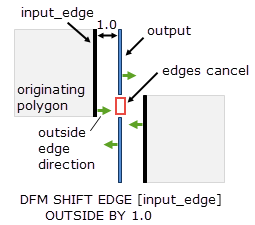
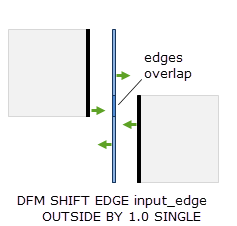

Layer operation
License: Calibre YieldEnhancer, except in LVS runs, which use a Calibre ADP (Advanced Device Properties) license.
Shifts edges based on DFM properties attached to the input layer. The output can be an error layer with two-edge or single-edge clusters, or a derived edge layer.
DFM SHIFT EDGE { layer1 | ‘[’layer1‘]’ }
{OUTSIDE BY | INSIDE BY} “shift_property”
[EXTEND [PRODUCED] BY “extend_property”]
{ [OFFSET “offset_property”] | [SINGLE] }
[FLIP]
A required input layer that must be a derived edge layer or a derived error layer. The input layer notation along with other keywords determines the type of output layer.
layer1 — The output layer is a derived error layer. By default, the error layer contains two-edge clusters. If SINGLE is specified, the output is single-edge clusters that contain only the final shifted edge.
[layer1] — When brackets enclose layer1 the output layer is a derived edge layer that contains the final shifted edges. This is also referred to as edge-directed output.
See “Output Layer for DFM Shift Edge” for a summary of the output layer type and the edge definitions for two-edge error clusters. Collinear edges in the output are handled differently for derived error layer output and edged-directed output; see “Collinear Edges in the Output Layer”.
The names of properties attached to layer1 can be passed to the operation as the arguments shift_property, offset_property, and extend_property. Alternatively, any of these arguments may be specified as a constant numeric value or a variable defined with a Variable statement.
If layer1 is an unmerged edge or error layer that does not contain DFM properties, it is merged before shifting occurs. If an unmerged layer1 does contain DFM properties, it is not merged before shifting occurs.
A required keyword and argument that specify the direction to shift each edge and the shift distance. Specify either OUTSIDE BY or INSIDE BY.
OUTSIDE BY — Specifies that each edge on layer1 is shifted in the direction perpendicular to the edge and outside of the original polygon from which it was created.
INSIDE BY — Specifies that each edge on layer1 is shifted in the direction perpendicular to the edge and inside of the original polygon from which it was created.
shift_property — Specifies the name of the property that defines the shift distance. The property name must be enclosed in quotes. Alternatively, you may use a constant value or numeric variable for shift_property. No output occurs for edges with a negative value of shift_property. A zero value causes output only in certain cases; see Table 1 and the discussion preceding the table.
The following figure shows the behavior of OUTSIDE BY and INSIDE BY with derived edge layer output. For simplicity, a constant value is used for shift_property; see the Examples for cases that use a DFM property for shift_property.
An optional keyword that specifies that each edge on layer1 is extended by extend_property in both directions along the edge. The name of the property that defines the extension distance is specified by extend_property. The property name must be enclosed in quotes. Alternatively, you may use a constant value for extend_property.
The value of the extension distance can be positive or negative. A positive value lengthens the edge at each end by the extend_property value. A negative value shrinks the edge at each end.
It is possible to extend or shrink an edge without shifting it. To do this, specify EXTEND BY and a shift_property value of 0. This is only possible for derived edge layer output ([layer1] notation) or single-edge error cluster output (SINGLE keyword). For example:
// extends edge layer L by 0.1 without shifting, outputs edge layer
L_ext = DFM SHIFT EDGE [L] INSIDE BY 0 EXTEND BY 0.1When two-edge error clusters are produced with EXTEND BY, by default the first edge in the pair includes the EXTEND BY adjustment. The PRODUCED keyword changes this behavior; see Figure 2 for an example of EXTEND BY with and without PRODUCED.
PRODUCED — An optional keyword used with EXTEND BY that creates a derived error layer consisting of the following two edges:
E1 — The original edge adjusted by the OFFSET and FLIP keywords, if specified. The EXTEND BY keyword is not applied to edge E1, unlike the case without PRODUCED.
E2 — The final edge, which is edge E1 with the options OUTSIDE BY, INSIDE BY, and EXTEND BY also applied.
The PRODUCED keyword for EXTEND BY can only be used when producing error layer output with two-edge clusters. It cannot be used with edge-directed output ([layer1] notation) or with SINGLE.
An optional keyword that causes each output edge pair to be shifted from the original edges. The name of the property that defines the offset value is specified by offset_property. The property name must be enclosed in quotes. Alternatively, you may use a constant value for offset_property. OFFSET can only be used with the layer1 notation.
The offset is applied in the direction indicated by the OUTSIDE BY or INSIDE BY keyword. The value of offset_property should be a non-negative number. Negative values produce no output.
This keyword can only be used for derived error layer output with two-edge clusters. It cannot be used with edge-directed output ([layer1] notation) or with the SINGLE keyword.
The first and second edges in the output are denoted by E1 and E2 in the following figure.
An optional keyword that specifies the output is a derived error layer with single-edge clusters that contain the shifted edge. SINGLE can only be used with the layer1 notation.
The SINGLE keyword cannot be used with edge-directed output ([layer1] notation), the OFFSET keyword, or the PRODUCED keyword.
SINGLE is useful when you want single edge output and want collinear edges in the output to remain distinct, rather than merge or cancel, as happens with edge-directed output. See “Collinear Edges in the Output Layer”.
An optional keyword that reverses the direction of all output edges.
The following figure shows edge-directed output with and without the FLIP keyword. If two-edge error clusters are produced, the edge direction of both edges is reversed.
It is possible to flip the edge direction without shifting the edge position. This is only possible if the output layer is a derived edge layer or a single-edge error cluster.
Shifts edges on the input layer. The shift value can be provided by a DFM property attached to the input edges or by a constant numeric value or numeric variable. The OFFSET and EXTEND BY keywords apply an offset and edge extension, respectively, to the input edges. The FLIP keyword reverses the direction of all output edges.
The type of output layer depends on the input layer notation and the keywords used, as summarized in the following table. When two-edge error clusters are produced, the edge shift value given by shift_property must be greater than zero in order to generate output. For single-edge error cluster or edge-directed output, a zero value for shift_property produces output only if the edge is altered by the EXTEND BY, FLIP, or OFFSET keyword. A negative value of shift_property does not produce output.
Output Layer |
Specify With: |
Not Used With: |
Limitations for shift_property Value |
|---|---|---|---|
Two-edge error cluster |
layer |
SINGLE |
Shift must be greater than zero for output |
Single-edge error cluster |
layer and SINGLE |
PRODUCED, OFFSET |
Zero shift generates output only if EXTEND BY, OFFSET, or FLIP is specified |
Derived edge layer (edge-directed output) |
[layer] |
SINGLE, PRODUCED, OFFSET |
Zero shift generates output only if EXTEND BY, OFFSET, or FLIP is specified |
When two-edge error clusters are output, the position, length, and direction of the output edges E1 and E2 is given by these rules:
Edge direction — By default, the direction of the first edge is opposite to that of the original edge, and the direction of the second edge is the same as the original edge. If FLIP is specified, the direction of both output edges is reversed.
E1 — The original edge adjusted by the OFFSET keyword, if specified. The EXTEND BY adjustment is included if PRODUCED is not specified.
E2 — The final shifted edge, with all adjustments.
Output edge directions are indicated in Figure 2 and Figure 3 with the EXTEND BY and OFFSET keyword definitions.
Collinear edges in the output layer are handled differently for edge-directed output ([layer1] notation) and error layer output.
Edge-Directed Output |
Error Cluster Output |
|---|---|
Collinear, overlapping edges with opposing directions cancel. Collinear edges with the same direction merge (not shown in figure). |
Collinear edges remain distinct. |
 |
 |
This example shows how to generate an input layer with DFM Property that can be used in a DFM Shift Edge operation.
met_edge = m1 LENGTH < 1
met_edge_p = DFM PROPERTY met_edge [ out = LENGTH(met_edge)*.01 ]
met_shift = DFM SHIFT EDGE [met_edge_p] OUTSIDE BY "out"This example generates new polygons using two-edge error output from DFM Shift Edge and DFM Copy with the REGION keyword. DFM properties on the input edges are used to position the edge pair between two polygons. The EXTEND BY keyword is used to reduce the vertical length of the new polygon by an amount that depends on the original length. A new polygon is not created if the vertical length of the input edge is less than 1; this is accomplished by setting the shift value to a negative number for such edges.
LAYER poly 4
edge_pair = DFM SPACE poly <= 1.5 BY EXT HORIZONTAL
// assign negative shift_val if edge length shorter than 1,
// which causes no output from DFM SHIFT EDGE
edge_prop = DFM PROPERTY edge_pair
[ shift_val = ( EC(edge_pair) >= 1.0) ? 0.5*EW(edge_pair) : -1 ]
[ offset_val = 0.25*EW(edge_pair) ]
[ ext_val = ( EC(edge_pair) >= 2.0) ? -0.5 : -0.25 ]
shift_pair = DFM SHIFT EDGE edge_prop
OUTSIDE BY "shift_val"
OFFSET "offset_val"
EXTEND BY "ext_val"
shift_polygon = DFM COPY shift_pair REGIONTwo overlapping edge pair clusters are generated for each qualifying polygon pair. DFM Copy merges its output, resulting in one output polygon per edge pair.